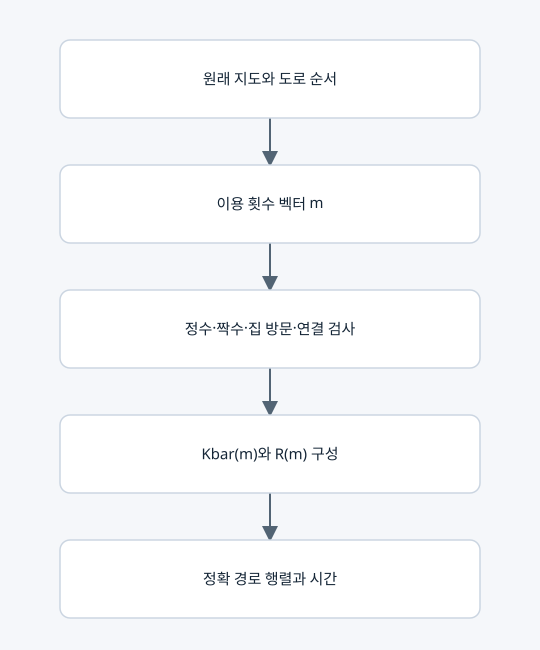

경로행렬과 이용 횟수의 구성·정의·생성 조건

운영 코드에서의 의미
경로의 기본 저장값은 counts 또는 optimal_route_counts의 횟수 벡터 m이다. 별도의 새 인접행렬 형식을 도입한 것이 아니다. 각 m을 표현하는 정확 행렬은 R(m)이며 복원 출력 키는 rational_matrix_similar_to_D다.
정의
m=(m_0,...,m_(p−1)), M=diag(m) (p×p의 설명용 대각행렬).
Kbar(m)=I+B diag(g_e m_e)Bᵀ, R(m)=H Kbar(m).
코드는 M과 B를 매번 밀집 행렬로 만들기보다 도로 목록으로 성분을 더한다. R_ii=a_i(1+Σg_e m_e)이고 실제 도로의 R_uv=−a_u g_e m_e다.
생성 조건
• 통합 최적 탐색의 m은 0·1·2의 정수다.
• 모든 꼭짓점에서 인접 횟수 합이 짝수여야 한다.
• 모든 필수 집과 모든 사용 도로가 가게에 연결되어야 한다.
• 같은 도로를 몇 번 썼는지는 구분하지만, 그 순서가 다른 경우는 별도 후보로 세지 않는다.
• 모든 w>0이므로 최적 경로에서 m_e≥3이면 2를 빼서 지지집합·짝수성을 유지하고 비용을 줄일 수 있다. 따라서 모든 최적해는 0·1·2 범위에 있다.
시간과 스펙트럼
time_ticks=Σw_e m_e+Σδ_i=trace(R)−n=Σμ_j−n.
특성다항식 전체가 같으면 같은 시간이다. trace만 같으면 시간이 같을 뿐 전체 스펙트럼까지 같지는 않다.
복원과 일대일 대응
원래 지도가 고정되면 m_e=−R_uv/(a_u g_e)로 유일하게 복원된다. 지도에 없는 성분, 정수가 아닌 횟수, 다른 대각 성분을 가진 행렬은 거부한다.
하지만 R(m)만으로 m=0인 도로의 원래 존재·비용을 알아낼 수는 없다. 원래 지도 + R(m)으로 복원한다. 고윳값만으로는 여러 경로행렬이 가능하므로 ⑦이 그 전체를 찾는다.
실제 수치 예
설명용 직선의 유효 m=(2,2)에 대해
R(m) = [[7/3, −4/3, 0], [−8/3, 106/15, −12/5], [0, −18/5, 33/5]].
trace(R)=16, n=3이므로 시간은 13틱이다. 직접 합도 2×2+3×2+1+2=13이다. 정확 특성다항식과 회로 JSON은 같은 설명용 예제 폴더에 저장한다.